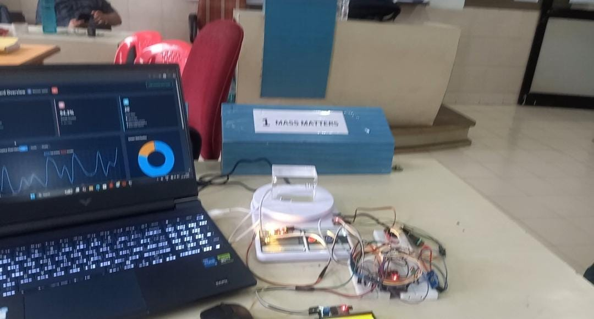
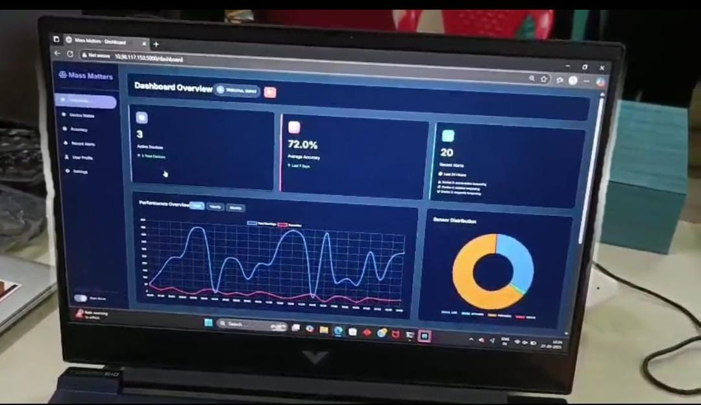

Multi-Sensor Tampering Detection System
An ESP32-based security and tamper-detection system combining motion, tilt, obstruction and magnetic sensing to detect physical interference and trigger alerts.
Project overview
The system was designed around the idea that different types of tampering require different sensing mechanisms. Instead of depending on one sensor, the platform combines multiple sensors and uses the ESP32 as the central controller.
The project integrates an MPU6050 for motion/tilt information, an LDR for detecting obstruction or covering of a monitored display/area, and a Hall-effect sensor for magnetic-state detection. A buzzer provides a local alert, while the broader system architecture supports monitoring and event reporting.
The project therefore demonstrates practical multi-sensor integration: sensor inputs must be read reliably, interpreted by the controller and converted into useful security events.
System architecture & technical focus
MOTION & TILT
MPU6050 used to detect movement and changes in orientation that can indicate physical disturbance.
OBSTRUCTION DETECTION
LDR used to detect changes in light conditions associated with covering or obstructing the monitored area.
MAGNETIC DETECTION
Hall-effect sensor used for magnetic-state/event detection as another independent tamper signal.
ALERTING & MONITORING
ESP32 processes sensor events and can trigger local buzzer alerts and monitoring notifications.
Work performed
- Designed the system around an ESP32 embedded controller.
- Integrated the MPU6050 for motion and tilt detection.
- Integrated an LDR to detect display/area obstruction or covering.
- Integrated a Hall-effect sensor for magnetic event detection.
- Read and processed multiple sensor inputs through the controller.
- Implemented local buzzer alerting for detected tamper conditions.
- Worked on the communication/monitoring side for reporting events to a dashboard or server.
- Tested the system using different sensor events instead of relying on a single trigger.
- Focused on combining complementary sensor inputs into a practical tamper-detection architecture.
Technology stack
Project media


